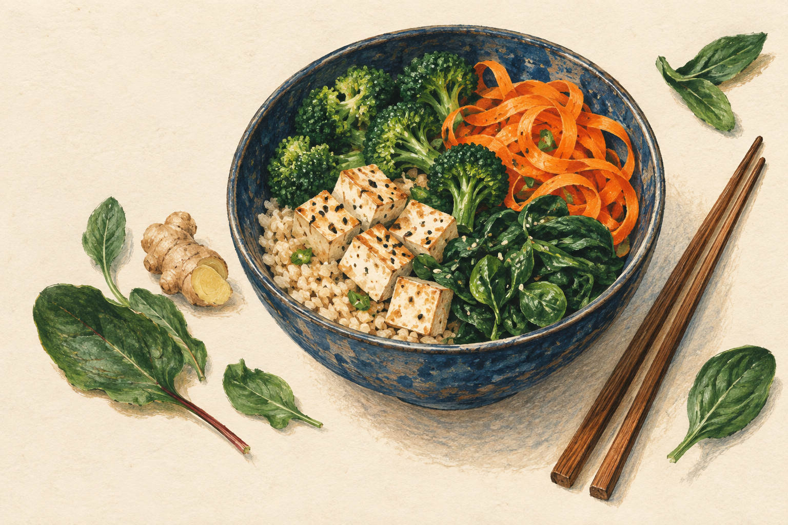

你有没有想过？
吃饭这件事，
也可以多一点
好奇心。
这是 NutriPath，一个把食物、科学和厨房连在一起的小工具。

七种餐桌风景
中式、日式、泰式，
今天想吃哪一种？
同一份食材，也可以换一种文化语境，变成新的料理灵感。
ChineseJapaneseThaiIndianSpanishWestern
透明一点，慢一点
每一个分数，
都可以点开看。
模型会展示食材贡献、烹饪损耗、证据状态和限制条件。不是神谕，是一个可以一起探索的研究演示。
A kitchen for curious minds.No DNA upload. No calorie counting. Just curiosity.
最后，端上餐桌
把“我该吃什么？”
换成“我想试试这个。”
打开 NutriPath，选一种食材、一种菜系，看看它能带你走到哪里。
去探索 NutriPath ↗
NutriPathFOOD, SCIENCE & A LITTLE CURIOSITY
食物是个人的。这个模型仍然是实验。
链接见主页 / 置顶评论
教育性研究演示，不是医疗建议、诊断、治疗或个体化饮食推荐。不能替代医生或注册营养师。所有分子指数为合成演示数据。